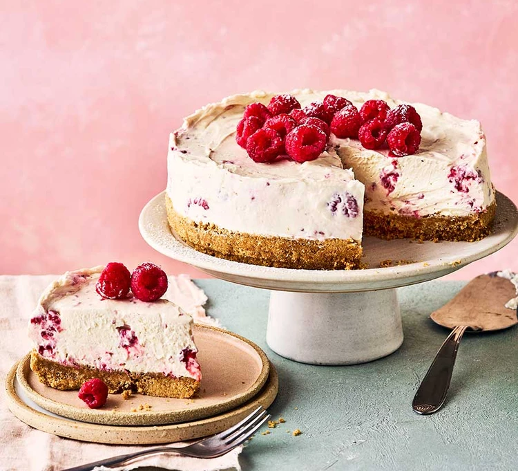

Blitz the biscuits in a food processor or tip into a food bag and bash to fine crumbs using a rolling pin. Transfer to a bowl and stir in the melted butter until the mixture looks like damp sand. Tip the buttery crumbs into a 20cm springform tin and press into the base using the back of a spoon until you have a smooth, even layer. Chill until needed.
Tip the soft cheese, sugar, vanilla, and cream into a bowl and beat using an electric whisk until thick and creamy. Fold in about two-thirds of the raspberries, pressing the berries lightly against the side of the bowl as you do to squeeze out some of their juices and lightly ripple the cream.
Scrape the cheesecake mixture over the chilled base and smooth the top with a spatula. Chill for at least 6 hrs, or preferably overnight. Can be made up to two days ahead and chilled. To serve, carefully remove from the tin, scatter with the remaining raspberries and dust with icing sugar, if using.